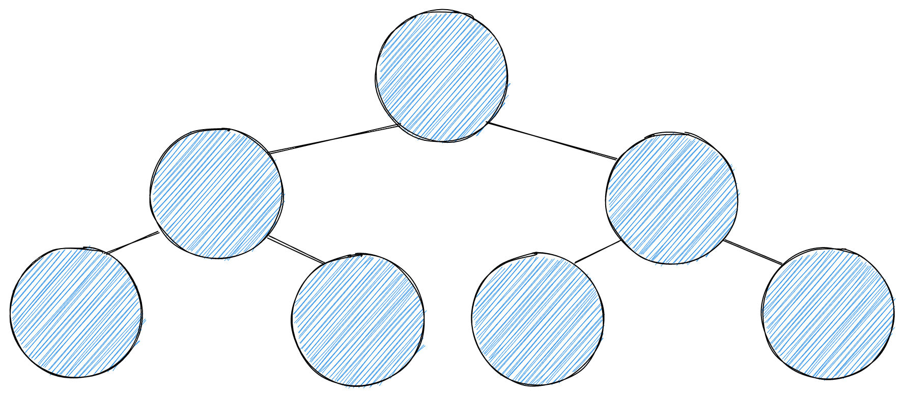

On this page
What is a tree?#
A tree is a data structure that represents a hierarchical relationship between a set of connected nodes. Each node can be connected to many children, depending on the kind of tree, but must be connected to exactly one parent. The exception is the root node, which has no parent.
Trees have many uses. One of the better known is the binary search tree, which gives logarithmic search over its nodes. In this post we build a plain tree instead, which lets us explore how JavaScript generator functions help build custom iterators for tree-shaped data.

How to build a tree in TypeScript#
Let's start with the building blocks: the Node and Tree classes.
The Tree and Node classes#
Our Node class has two properties:
- A
nameto identify it. children, the nodes it points to.
Our Tree class starts with a single root property, the top of the tree.
class Node {
name: string
children: Node[]
constructor({ name, children }: { name: string; children: Node[] }) {
this.name = name
this.children = children
}
}
class Tree {
root: Node | null = null
}
Later we will add methods to Tree to make it useful, most likely I/O operations:
get, set, update, remove. All of them share one need:
walking the tree from the root to the leaves.
Tree traversal#
To reach every node we need a way to iterate over the tree. Since a tree is not a native array, the built-in
iterators like forEach or for of do not apply. A generator function gives us a
custom iterator with almost no ceremony. There are several ways to traverse a tree. Let's look at the two most
common: depth-first and breadth-first.
Depth-first search (DFS)#
export class Tree {
root: Node | null = null
*traverse(node = this.root): Iterable<Node> {
if (!node) return
yield node
for (const child of node.children) {
yield* this.traverse(child)
}
}
}This generator walks the tree recursively. It yields each node back to the caller, then descends into that node's children until every leaf of the subtree has been yielded, and only then moves on to the next sibling.
Breadth-first search (BFS)#
*traverse(node = this.root): Iterable<Node> {
if (!node) return
const queue: Node[] = [node]
while (queue.length > 0) {
const current = queue.shift()!
yield current
queue.push(...current.children)
}
}The breadth-first version walks the tree one level at a time. It yields every node of a level before moving to the next. Pick whichever suits your use case; the rest of the post works with either.
A generator is lazy. Callers can stop after the first match, so a get over a large tree does
not have to visit every node. The same method also plugs straight into for of, spread, and
Array.from.
I/O methods#
With a way to iterate over the tree in hand, the I/O methods become short.
Set#
Inserting a node has two cases:
- The tree has no root yet. The new node becomes the root and no address is needed.
- The tree already has a root. We need an address for the parent, and here we use the parent's name.
type IOResult = Node[] | null
set(node: Node, parentName?: string): IOResult {
if (!this.root) {
this.root = node
return [node]
}
for (const current of this.traverse()) {
if (current.name === parentName) {
current.children.push(node)
return current.children
}
}
return null // parent not found
}Get#
Reading a node is the same loop without the mutation. Because traverse is lazy, returning early
stops the walk right there.
get(name: string): Node | undefined {
for (const node of this.traverse()) {
if (node.name === name) return node
}
}Names as addresses are a simplification. In a real tree you would key on an id, or return the path from the root so that duplicates stay reachable.
Wrap up#
A tree is a small amount of code once traversal is a generator. The update and
remove methods follow the same shape as set: walk, match on the name, mutate,
return. The full implementation with tests is in the
repository.